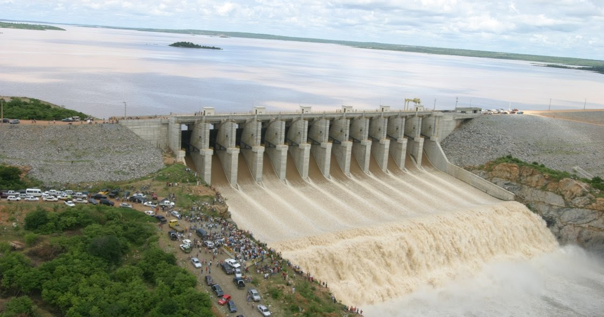

Informações técnicas sobre relevo, população, IDH etc.
| INFORMAÇÕES | |
|---|---|
| Municípios limítrofes | Norte: Tabuleiro do Norte, São João do Jaguaribe, Morada Nova, Leste: Apodi-RN, Sul: Potiretama, Iracema, Oeste: Jaguaribara |
| Fundação | 1 de junho de 1958 (63 anos) |
| Área total | 1.345,701 km² |
| Clima | Tropical quente semiárido |
| IDH | 0,601 |
| PIB | R$ 8.908,98 |
| INFORMAÇÕES TERRITORIAIS | |
|---|---|
| Número de habitantes | 17 146 habitantes |
| Superfície de Alto Santo |
133 821 hectares
1338,21 km² |
| Densidade populacional | 12,8 ha./km² |
| Altitude de Alto Santo | 77 metros de altitude |
| Coordenadas geográficas decimais |
Latitude:
-5.52137
Longitude: -38.2718 |
| Coordenadas geográficas sexagesimais | Latitude: 5° 31' 17'' Sul , Longitude: 38° 16' 18'' Oeste |
| INFORMAÇÕES DO MUNICÍPIO | |
|---|---|
| Endereço da Prefeitura Municipal de Alto Santo |
Alto Santo
Prefeitura de Alto Santo
Rua Coronel Simplício Bezerra, Nº198 Centro Alto Santo - CE, 62970-000 Brasil |
| Telefone da prefeitura |
(88) 3429-2080
(88)9.9841-9993
Internacional: +55 88 3429-2080 |
| Fax |
(85) 3429-1200
Internacional: +55 85 3429-1200 |
| Endereço electrónicoda prefeitura |
prefeitura@altosanto.ce.gov.br
|
| Site oficial do município | altosanto.ce.gov.br |
| INFORMAÇÕES DO ADMINISTRATIVAS | ||
|---|---|---|
| Prefeita de Alto Santo | Maria Irisneile Gadelha Sousa Costa | |
| Partido politico | PSB | |
| INFORMAÇÕES DE TRANSPORTE | |
|---|---|
| Transporte urbano disponível | - |
| Aeroporto |
Aeroporto Dix-Sept Rosado
106.7 km
Aeroporto Internacional Pinto Martins
196.4 km
Aeroporto Regional do Cariri
218.9 km
|
| INFORMAÇÕES DE DISTÂNCIA A OUTRAS CIDADES | ||
|---|---|---|
| São Paulo : 2198 km | Rio de Janeiro : 2006 km | Brasília : 1555 km |
| Salvador : 830 km | Curitiba : 2507 km | Belo Horizonte : 1706 km |
| Manaus : 2429 km | Fortaleza : 203 km mais perto | Recife : 469 km |
| Goiânia : 1725 km | Belém : 1223 km | Porto Alegre : 3048 km |
| Guarulhos : 2176 km | Campinas : 2153 km | São Luís : 748 km |
| Distância calculada em linha reta! | ||
Conheça mais sobre a história de Alto Santo.
Por volta do ano de 1866, à margem direita do rio Figueiredo, coube ao Capitão Simplício de Holanda Bezerra, proprietário de vastas terras na região, dar início a construção de uma pequena capela, o que logo deu origem a um próspero povoado.
Com passar dos anos, casas e mais casas foram se aglomerando em torno dessa capela, o que logo deu origem a um próspero povoado.
Através da resoluçaõ provincial N° 1.345, de 07 de outubro de 1870, esse povoado foi elevado à categoria de distrito de Paz do município de São Bernado de Russas(atual Russas), recebendo o nome de Alto Santo da Viúva.Com esse nome que segundo historiadores, era uma referência direta a Dona Tereza Melo de Jesus, viúva do Coronel Teodésio Pereira de Melo, primeiros moradores daquelas terras, permaneceu até o dia 20 de outubro de 1938, quando por Decreto Estadual de N°378 passou a denomina-se simplimente Alto Santo.
A criação do distrito de Paz com a denominação de alto Santo da Viúva do município de São Bernardo de Russas,data de 07 de outubro de 1870, através da resolução Provincial de N° 1.345.
No ano seguinte precisamente em 24 de março de 1871, por Ato Provincialesse distrito foi suprimido (do seu município de origem), a parti daí foi novamente criado e anexado ao município de Limoeiro do norte, tendo sua instalação em 07 de janeiro de 1873.
Adquiriu sua indepêndencia política- administrativa como município por força da Lei N°3.814 de 13/12/1957, quando emancipou-se do município de Limoeiro do norte. Foi instalado oficialmente no dia 1° de junho de 1958, sendo seu primeiro Prefeito o senhor Osório Martins de Moura Brasil. O município é constituido de dois distrito: o da sede e o de castanhão.
O distrito de Castanhão foi criado pela Lei N° 1.153, de 22/11/1951.Este distrito já teve seu momento de glória quando foi elevado a município pela Lei N° 6.654, de 14/10/1963, porém logo foi extinto pela Lei N° 8.339, de 14/12/1965, antes de ser instalado. Hoje continua como distrito de Alto santo.
Saiba mais sobre os melhores lugares e o que fazer em Alto Santo.
Travessa José De Alencar, Alto Santo - CE, 63150-000
O Açude Castanhão , de NOME OFICIAL: Açude Público Padre Cícero, é um açude brasileiro construído sobre o leito do rio Jaguaribe, no estado do Ceará. Ele é portanto uma represa, tecnicamente falando. A barragem está localizada em Jaguaribara, embora atinja outros municípios. A obra foi iniciada em 1995, durante o governo de Tasso Jereissati, e concluída em 23 de dezembro de 2002, pelo governador Beni Veras (PSDB), numa parceria entre a Secretaria de Recursos Hídricos do Ceará - SRH-CE e o Departamento Nacional de Obras Contra as Secas - DNOCS.
A barragem castanhão foi inicialmente pensada pela família Cunha. Principalmente pelo Sr. José Holanda Cunha figura conhecida que comandava a oligarquia da região na época. A família Cunha era dona das terras da fazenda Castanhão (que deu nome ao açude, por cobrir suas terras quase por inteiro) e o povoado conhecido como "Boqueirão do Cunha" onde o açude se encontra atualmente. Durante a construção do açude foi necessário remover a antiga sede do município de Jaguaribara, que ficou sob as águas.
Em substituição à cidade submersa, foi construída a cidade de Nova Jaguaribara. O açude do Castanhão compreende os limites geográficos de pelo menos quatro municípios cearenses: Jaguaribara (Nova Jaguaribara), Alto Santo, Jaguaretama e Jaguaribe, dadas as suas grandes dimensões. Representa importante mecanismo de controle das secas e das cheias sazonais que atingem o vale do Jaguaribe, assim como, cresce em importância para o restante do Ceará, enquanto reserva hídrica estratégica para o Estado. Suas águas são vocacionadas para o uso na agricultura irrigada, piscicultura, pesca (esportiva e de subsistência), lazer náutico, assim como, através da construção do Canal da Integração, este açude terá suas águas levadas para abastecimento da população da Grande Fortaleza e para o Complexo Portuário do Pecém, onde permitirá a implantação de um polo industrial.
Não há uso atual como fonte hidroelétrica desta barragem. A capacidade de armazenamento do Castanhão é de 6.700.000.000 m³, o que o coloca como o maior açude para múltiplos usos da América Latina. Sozinho, ele tem 37% de toda a capacidade de armazenamento dos 8.000 reservatórios cearenses.Antes do Castanhão a maior barragem cearense era o Orós, no município de mesmo nome, que também é uma represa no Rio Jaguaribe, mas que comporta pouco mais da metade da capacidade do Castanhão.
O Castanhão é uma maravilha da engenharia moderna, concluída neste século, mas cujos projetos iniciais remontam o século 19, quando surgiram os primeiros estudos para se edificar uma obra que garantisse reserva de água para enfrentar a irregularidade das chuvas no semi-árido Nordestino. Destaque especial merece o engenheiro da Universidade de Stanford, "Sir" Roderic Crandall, que identificou na área conhecida como "Boqueirão do Cunha", onde atualmente está este açude, uma série de marcadores geológicos que indicavam aquela ser a melhor região para a construção da barragem.
Veja como chegar nos melhores pontos de Alto Santo